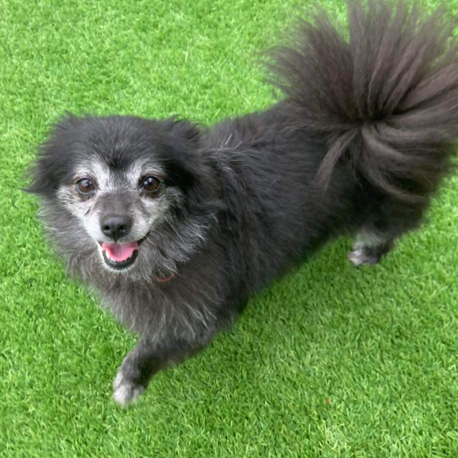

Life of Nyx
The story of how our little pupper came to us
 The cutest little girlie around ♥
The cutest little girlie around ♥
How a small yet feisty little girl overcame the impossible from a rough
neighbourhood to a relaxed lifestyle in Lower Templestowe with frequent
cuddles and lots of food.
- Nyx was born in 2016 in Broadmeadows
-
She grew up in a household with lots of possums and started
developing grey hair early on from stress
-
In 2018 she met a male pomeranian they had a litter with 4 puppies
-
Within 6 months all of Nyx's puppies were sold off and taken away
from her. She was devastated for a minute, before she realised she
had more food for herself
-
Her owners then sold her off into the circus because she had
excellent balancing and pouncing skills
-
Nyx enjoyed doing tricks but realised she wasn't getting enough food
for all the pouncing she was doing. She decided to run away
-
She returned to Broady to try and find her puppies again. She looked
high and low but had no luck
-
She was captured one day by the Lost Dogs Home. The new environment
was very scary and filled with barking dogs
-
They operated on her and Nyxy was hurting for weeks afterwards
-
On September 3rd 2019 she met Vicky and Maree and charmed them
-
On September 5th, they decided to adopt Nyxy and bring her back to
leafy Lower Templestowe
-
To this day Nyxy enjoys plenty of treats, MyDog dinners and cuddles

Read up on the incredible history of Pomeranians
here.